두 도구는 같은 일을 한다. 다른 건 사용자에게 무엇을 요구하고, 대신 무엇을 돌려주는가다.
문의가 들어오면 유형에 따라 다른 시트에 기록하고, 담당자에게 알림 메일을 보낸다.
| 구성 | 내용 | 요건 |
|---|---|---|
| Trigger | Google Forms 응답 제출 — 응답 시트에 신규 행 추가 | 1개 이상 ✓ |
| 조건 분기 | 폼의 문의 유형 필드 값으로 2갈래 | 1개 이상 ✓ |
| Action 1·2 | 솔루션 도입 상담 → 도입상담 탭 기록 → 알림 메일 발송 | 2개 이상 ✓ 실제 4개 |
| Action 3·4 | 단순 문의 → 일반문의 탭 기록 → 알림 메일 발송 |
Router를 놓고 경로마다 필터 조건을 따로 건다. 경로가 먼저 있고 조건이 나중에 붙는다.
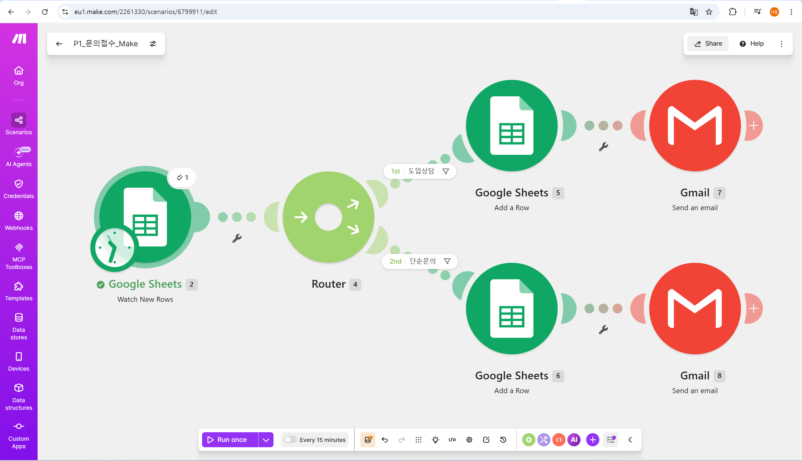
응답 시트를 소스로 지정하고, 결과 시트의 각 열에 값을 꽂는다. 두 화면 모두 사용자가 시트 구조를 직접 지정한다.
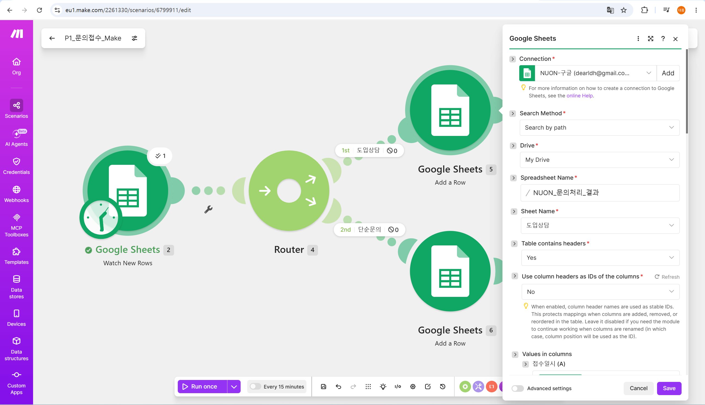
Paths는 조건과 액션이 하나의 경로 블록 안에 묶여 있다. 경로를 만들면 조건 입력란이 이미 그 안에 있다.
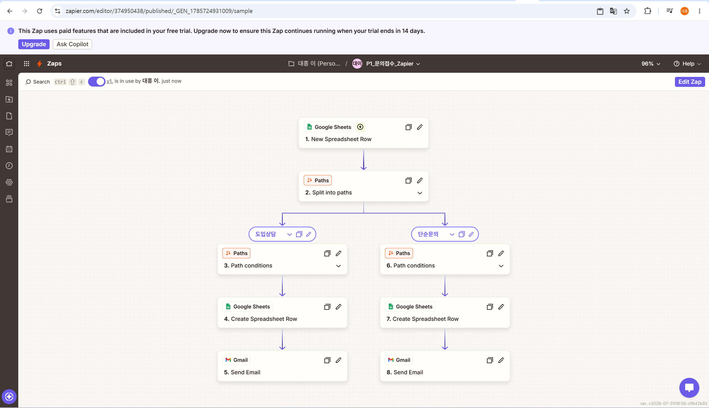
같은 응답 시트를 소스로 지정했다. 조건은 Custom rules 안에서 필드·연산자·값을 고른다.
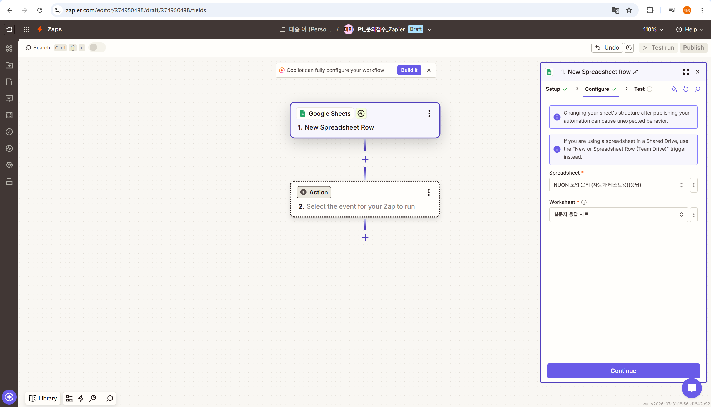
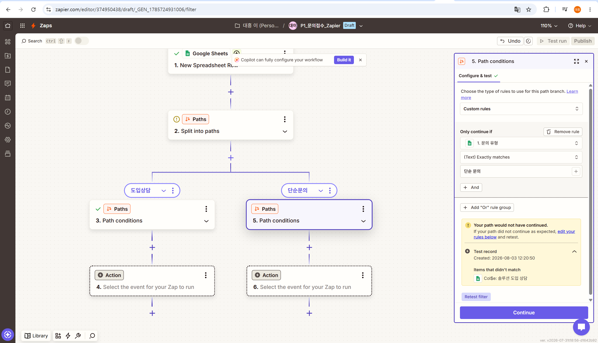
Make를 기준 구현으로 삼고 동일 구조를 Zapier로 옮겼다. 순서를 이렇게 잡은 이유는 무료 플랜에서 완주 가능한 쪽을 먼저 확정하기 위해서였다.
| 단계 | 작업 | MAKE | ZAPIER |
|---|---|---|---|
| 01 | 준비 | 공통 · Apps Script로 폼 생성 · 응답 시트 · 결과 시트(탭 2개) 구성 | |
| 02 | 계정 · 연동 | 무료 가입, 약 2분 | 가입 시 Pro 체험 14일 자동 적용, 약 2분 |
| 03 | 트리거 | Watch New Rows — 헤더 범위 A1:G1 수동 입력 | New Spreadsheet Row — 시트 선택만으로 헤더 인식 |
| 04 | 분기 | Router 배치 후 필터를 나중에 추가 | Paths 생성 시 조건 입력이 함께 강제 |
| 05 | 액션 | 공통 · 경로별 시트 기록 → 알림 메일 발송 (총 4개) | |
| 06 | 실행 | 필터 전 Run once → 양쪽 경로 통과 사고 필터 추가 후 재실행 | Publish 후 폼 제출 2건으로 자동 실행 |
| 07 | 검증 | 공통 · 결과 시트 확인 중 열 매핑 밀림을 양쪽에서 발견 | |
요건은 5개 이상. 구현 중 실제로 관찰된 차이만 뽑아 7개가 나왔다. ★는 마찰이나 사고가 발생해 근거가 뚜렷한 항목.
| MAKE | ZAPIER | |
|---|---|---|
| 화면 형태 | 2차원 캔버스, 모듈을 자유 배치 | 위에서 아래로 흐르는 선형 스텝 리스트 |
| 전체 조망 | 한 화면에서 분기 구조가 그림으로 보임 | 스크롤하며 순서대로 확인 |
| 스텝 번호 | 모듈별 고유 번호 (2·4·5·6·7·8) | 실행 순서대로 1~8 |
| MAKE | ZAPIER | |
|---|---|---|
| 구성 요소 | Router(경로) + 필터(조건) 분리 | Paths 하나에 경로와 조건이 통합 |
| 조건 입력 위치 | 경로 연결선의 깔때기 아이콘 클릭 | 경로 블록 안 조건 입력란 |
| fallback 경로 | 지원 — 조건 없이 모두 통과시키는 예비 경로 | 개념 없음 |
| 조건 누락 시 | 모든 데이터가 통과 | 경로 저장 자체가 안 됨 |
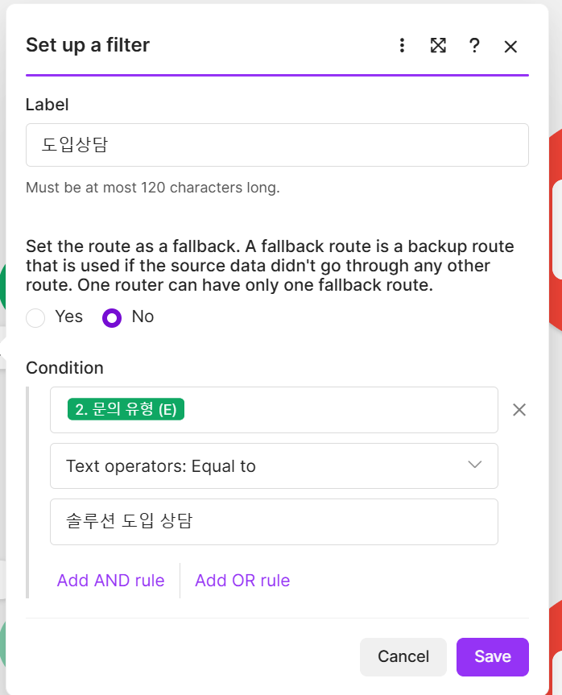
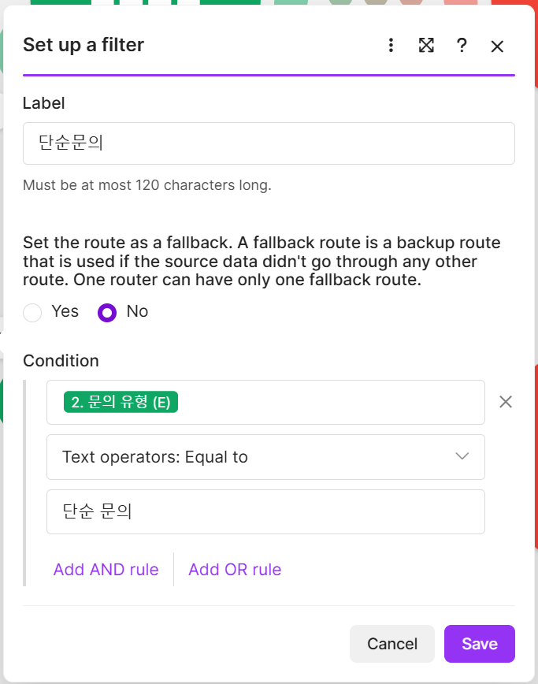
필터를 걸기 전에 Make에서 Run once를 실행했고, Router의 양쪽 경로가 모두 통과해 같은 데이터가 두 탭에 기록됐다.
| 탭 | 기록된 행 |
|---|---|
| 도입상담 | 003 · 003(중복) · 004 |
| 일반문의 | 002 · 003(오분류) · 005 |
테스트003 한 건이 도입상담에 두 번, 일반문의에도 한 번 들어갔다. 문의 유형이 솔루션 도입 상담이므로 일반문의 탭에는 들어갈 수 없는 건이다.
Zapier가 처리한 004·005는 각각 맞는 탭에 한 번씩만 기록됐다.
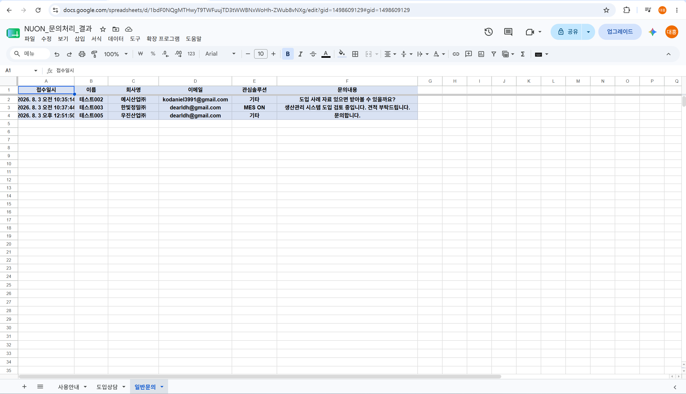
| MAKE | ZAPIER | |
|---|---|---|
| 필드 표시 | 이름 (B) — 열 문자 식별자 | 필드명 + 실제 응답 샘플값 |
| 시트 구조 파악 | 헤더 범위·열 ID 사용 여부를 직접 지정 | 시트 선택 시 자동 인식 |
| 체감 난이도 | 더 헤맴 | 상대적으로 수월 |
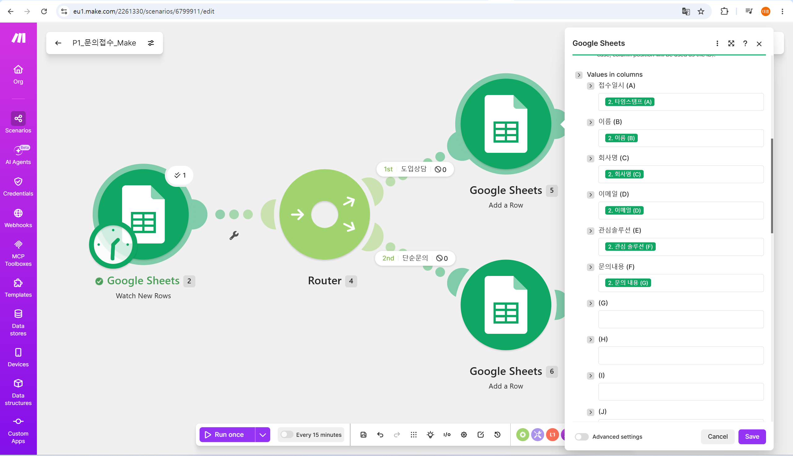
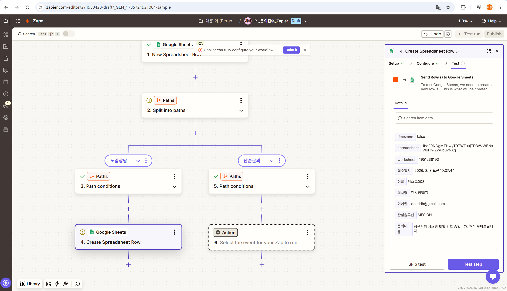
결과 시트엔 문의 유형 열이 없는데 응답 시트엔 있다. 그래서 다섯 번째부터 한 칸씩 어긋난다.
앞의 네 개가 우연히 A→A, B→B로 맞아떨어지니 "순서대로 꽂으면 되겠다"고 판단하기 쉽다. Make는 (F) 같은 열 문자만 보여주므로 눈으로 검증할 방법이 없다.
도입상담 탭의 이메일 칸에 솔루션 도입 상담이 기록됐다. 이메일 주소가 아니라 문의 유형 값이다.
Z09의 Data out에도 같은 값이 찍혀 있다. 즉 기록 단계가 아니라 트리거가 응답 시트를 읽는 단계에서 열이 밀렸다.
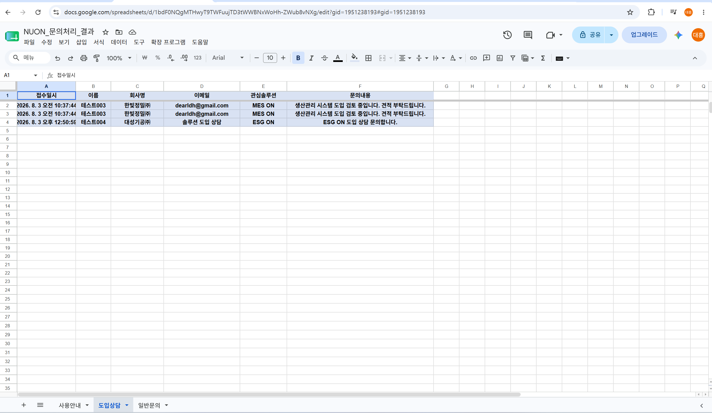
| MAKE | ZAPIER | |
|---|---|---|
| 표시 위치 | 편집 캔버스 위에 겹쳐 표시 | 별도 History 페이지 |
| 실행된 경로 | 체크 + 처리 건수 ✓1 | This path ran. |
| 실행 안 된 경로 | ⊘0 — 기호 + 숫자 | Path did not run as the rule conditions were not met. |
| 데이터 확인 | 버블 클릭 → 팝업 | 스텝 클릭 → 우측 패널 고정 |
| 이력 보존 | 시나리오 단위 | 계정 단위 통합 히스토리 |
한 경로가 실행되면 반대 경로에 ⊘0이 붙는다. 캔버스를 벗어나지 않고 확인된다.
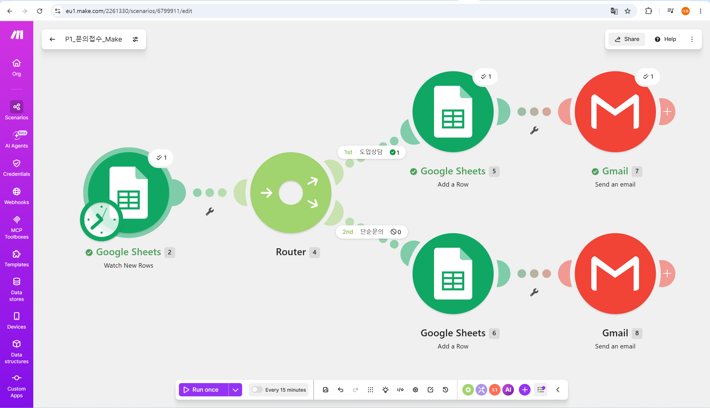
별도 History 페이지에서 실행 건을 열면, 각 경로 아래에 실행 여부와 사유가 적힌다.
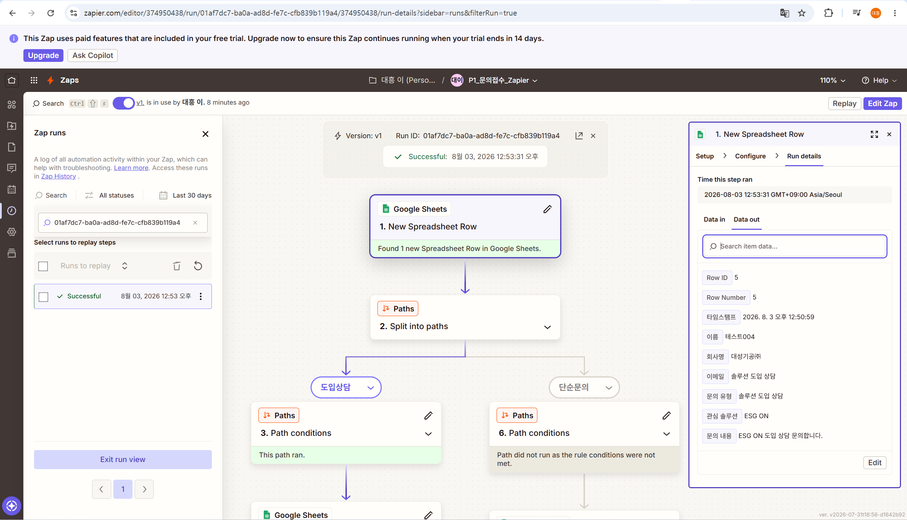
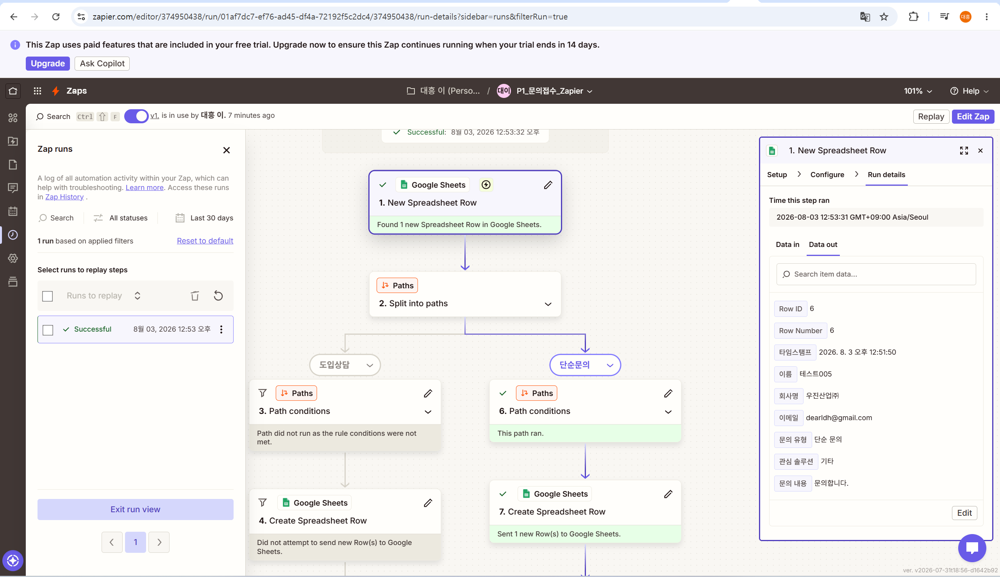
시트 기록 다음 단계인 메일 발송까지 실행돼, 경로마다 제목과 본문이 다르게 나갔다.
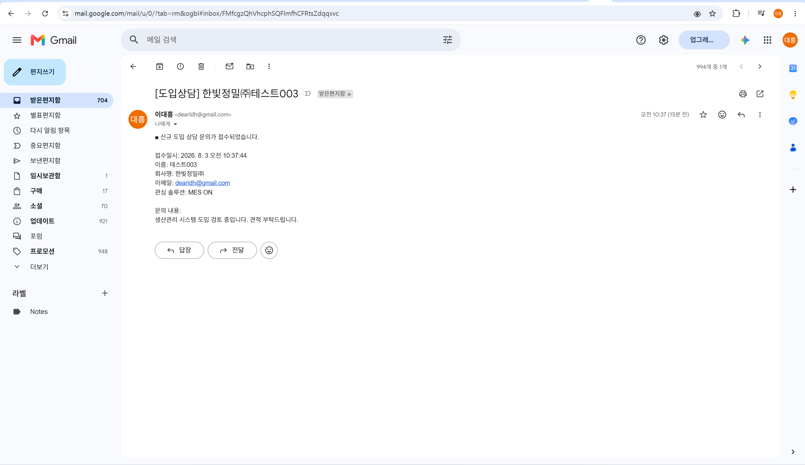
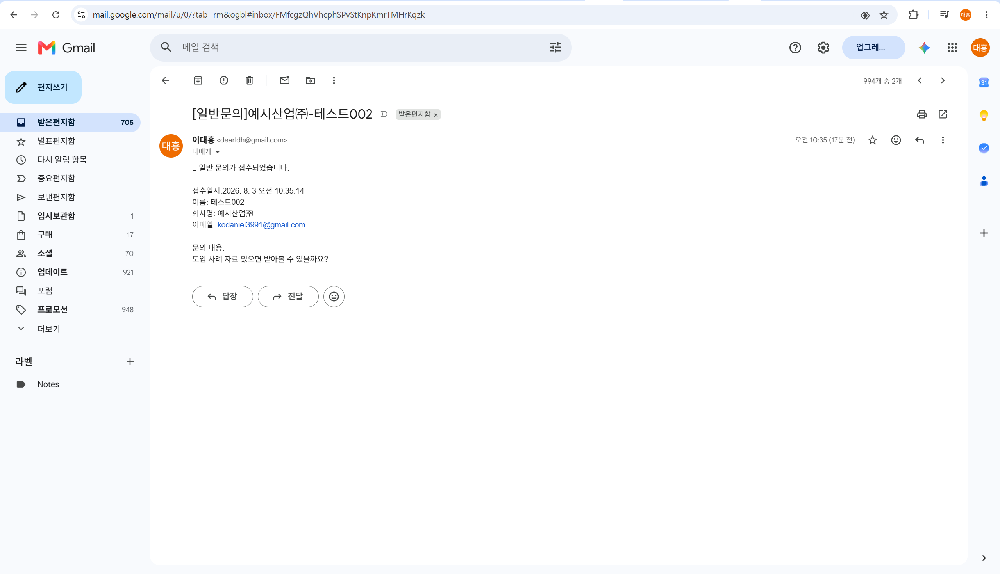
| MAKE — 무료 | ZAPIER — Pro 체험 | |
|---|---|---|
| 폼 제출 → 시트 기록 | 느림 | 빠름 |
| 원인 | 무료 플랜 최소 폴링 간격 15분 (M01 하단 Every 15 minutes 토글) | 상위 플랜의 짧은 폴링 주기 |
| MAKE | ZAPIER | |
|---|---|---|
| 제한의 성격 | 양적 제한 | 기능적 제한 |
| 구체적 내용 | 월 1,000 크레딧 / 활성 시나리오 2개 / 최소 15분 간격 | 단일 스텝만 허용 — 멀티스텝·Paths 불가 |
| 이번 구현 실측 | 9 / 1,000 크레딧 사용 (1%) | Pro 체험 없이는 착수 불가 |
| 분기 워크플로우 무료 구현 | 가능 | 불가능 |
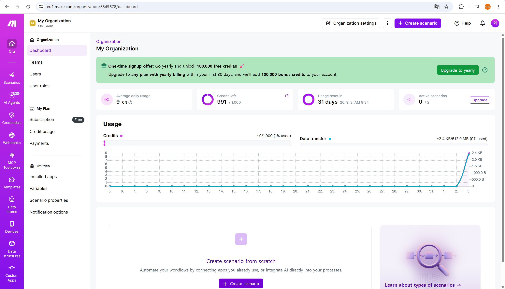
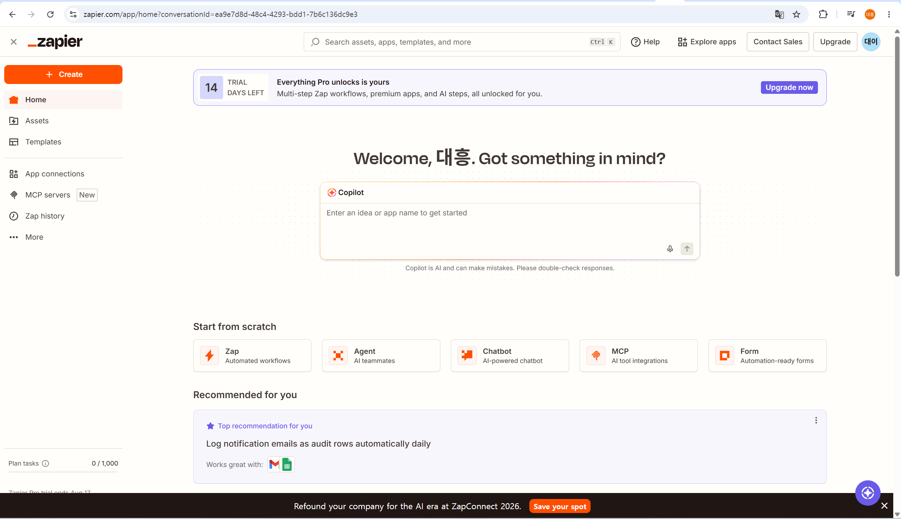
| MAKE | ZAPIER | |
|---|---|---|
| 계정 생성 ~ Google 연동 ~ 첫 모듈 배치 | 약 2분 | 약 2분 |
| 부록 — 실행 실패 대응 |
|---|
|
구현 과정에서 실행 실패(error)는 양쪽 모두 발생하지 않았다. 따라서 에러 핸들링·재실행 편의성은 실측 근거가 없어 비교 항목에서 제외했다. 다만 실행은 성공했으나 결과가 잘못된 논리 오류는 양쪽 모두 발생했다(항목 2·3). 자동화에서 위험한 건 멈추는 오류가 아니라 조용히 잘못된 값을 남기는 오류라는 게 이번 구현의 실감이다. |
| 비교 항목 | MAKE | ZAPIER | 우위 |
|---|---|---|---|
| 워크플로우 표현 구조 | 2차원 캔버스 | 선형 스텝 리스트 | 구조 복잡도에 따라 |
| 조건 분기 구현 | Router+필터, fallback 지원 | Paths 통합, 조건 강제 | ZAPIER (안전성) |
| 데이터 매핑 | 열 문자 식별자 | 샘플값 동반 | ZAPIER (첫 구현 한정) |
| 실행 로그 확인 | 기호 ⊘0, 캔버스 내 | 문장 설명, 별도 페이지 | ZAPIER (초심자 기준) |
| 트리거 반응 속도 | 느림 (무료 15분) | 빠름 (Pro 체험) | 플랜 차이, 도구 차이 아님 |
| 무료 플랜 가용 범위 | 분기 구현 가능 · 9/1,000 | 분기 구현 불가 | MAKE |
| 초기 설정 소요 | 약 2분 | 약 2분 | 차이 없음 |
| 장점 | |
|---|---|
| + | 무료 플랜에서 분기 워크플로우 완주 가능 (9/1,000 사용) |
| + | 2차원 캔버스로 분기 구조를 한눈에 조망 |
| + | 실행 결과를 편집 화면에서 바로 확인 |
| + | fallback 경로 지원 — 예외 처리 설계 여지 |
| 단점 | |
|---|---|
| − | 필드가 열 문자로만 표시돼 값 검증이 어려움 |
| − | 헤더 범위·열 ID 사용 여부를 직접 지정해야 함 |
| − | 조건 누락 시 경고 없이 전량 통과 |
| − | 무료 폴링 최소 15분 |
| 장점 | |
|---|---|
| + | 필드 선택 시 실제 응답값을 함께 표시 |
| + | 미실행 사유를 자연어 문장으로 설명 |
| + | 조건 입력이 강제되어 누락이 구조적으로 불가 |
| + | 계정 단위 통합 실행 이력 |
| 단점 | |
|---|---|
| − | 무료 플랜에서 이번 워크플로우 구현 불가 |
| − | 체험 만료 시 분기 워크플로우가 잠김 |
| − | 선형 리스트라 분기가 늘면 조망성 저하 |
| − | 실행 로그가 별도 페이지 — 편집 중 이동 필요 |
Zapier는 첫 성공까지의 거리를 줄이고,
Make는 열 번째 워크플로우의 효율을 높인다.
샘플값을 보여주고(3), 미실행 사유를 문장으로 설명하고(4), 조건 입력을 강제한다(2).
열 문자만 노출하고(3), 기호로 압축해 표시하고(4), 조건을 선택 사항으로 둔다(2).
| 상황 | 선택 | 이유 |
|---|---|---|
| 자동화를 처음 만들어 본다 | ZAPIER | 첫 성공 확률이 높음 (항목 3·4) |
| 운영자가 여러 명이라 실수 여지를 줄여야 한다 | ZAPIER | 조건 누락이 구조적으로 불가능 (항목 2) |
| 예산 없이 분기 워크플로우가 필요하다 | MAKE | 무료로 분기 구현 가능 (항목 6) |
| 분기·병합이 많은 복잡한 흐름 | MAKE | 2차원 캔버스의 조망성 + fallback (항목 1·2) |
| 실행 횟수가 매우 많다 | MAKE | Zapier는 실행 단위 과금 부담이 큼 |
프로젝트 2는 Make 단독으로 진행한다. 근거는 두 가지다.
사용한 유료 기능 — Zapier Paths 및 멀티스텝 Zap · Professional 14일 체험 2026-08-03 ~ 08-17
불가피했던 이유 — 과제 요건(Action 2개 + 분기 1개)이 Zapier 무료 플랜의 경계 밖에 있다. 기능을 축소해 우회할 방법이 없었다.
| 무료 대안 | 내용 | 한계 |
|---|---|---|
| A. Make 단독 | Make 무료 플랜은 Router·필터를 모두 제공 | 도구 비교라는 프로젝트 1의 목적을 달성 못 함 |
| B. Zapier 분기 우회 | 단일 스텝 Zap 2개 + 시트 수식으로 사전 분류 | 분기 판단이 Zapier 밖에서 일어나 요건 미충족 |
| C. n8n 자가호스팅 | Docker 로컬 구동 시 실행 무제한, 분기 제한 없음 | 초기 세팅 비용 발생 (비교 축 추가 장점은 있음) |
| M00 | 트리거 설정 |
| M01 | 시나리오 전체 캔버스 |
| M02 | 시트 기록 모듈 설정 |
| M03 | 데이터 매핑 · 열 지정 |
| M04·05 | 필터 조건 2종 |
| M06·07 | 분기 실행 결과 2종 |
| M08 | 플랜 · 크레딧 상태 |
| R01·02 | 결과 시트 탭 2종 |
| R03·04 | 알림 메일 2종 |
| Z00 | 플랜 · Pro 체험 상태 |
| Z01 | 초기 화면 · 빈 Zap |
| Z02 | 트리거 설정 |
| Z03 | Paths 경로 생성 |
| Z04 | Paths 조건 설정 |
| Z05 | 데이터 매핑 · 테스트 |
| Z06 | Zap 전체 구성 |
| Z07 | 실행 이력 목록 |
| Z08·09 | 실행 상세 2종 |